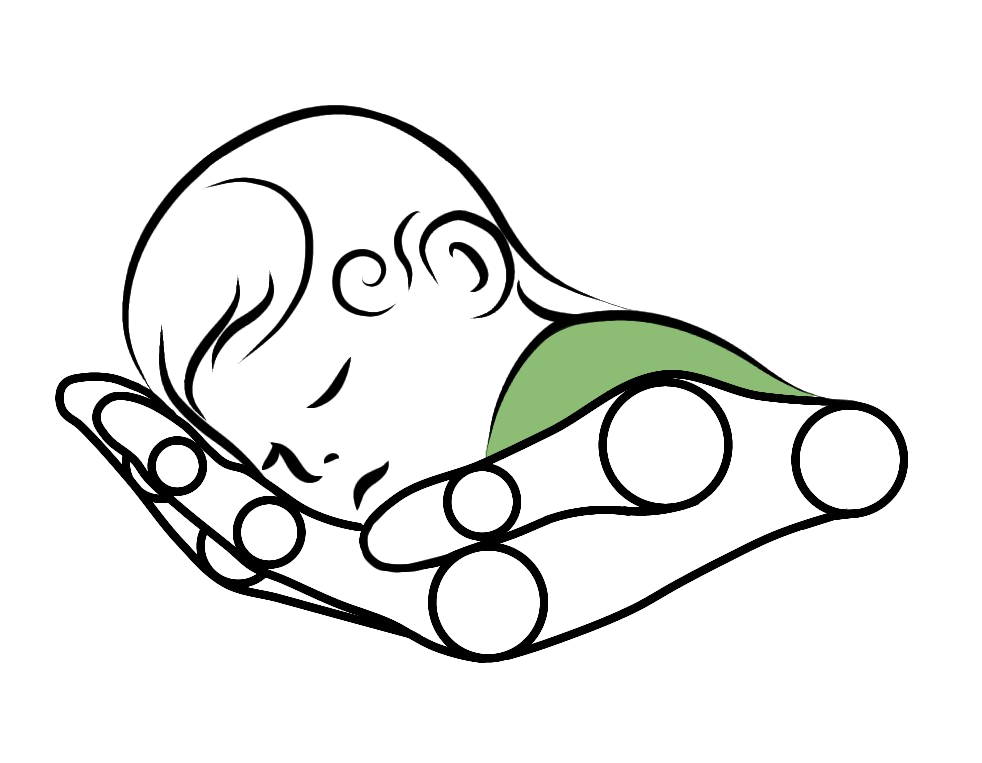

BabyTrack AI
Badanie rozwoju motorycznego niemowląt
Projekt naukowo-badawczy UKW w Bydgoszczy. Bezpłatna, nieinwazyjna ocena rozwoju ruchowego niemowląt.
Polski Związek Głuchych — Oddział Kujawsko-Pomorski, ul. Bernardyńska 3, 85-029 Bydgoszcz
Prosimy o udział w obu etapach. Zmiana terminu — prosimy o kontakt telefoniczny: 609 222 466 lub 667 727 543.